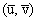
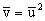
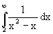

| KANTONSSCHULE REUSSBÜHL | Maturitätsprüfungen 1997 |
M a t h e m a t i k Typus C
Bemerkungen: Jede Aufgabe soll auf einer neuen Seite begonnen werden.
Zeit: Drei Stunden.
Jede vollständig gelöste Aufgabe wird mit maximal 10 Punkten bewertet.
Für 40 Punkte wird die Note 6 erteilt.
1. Eine Kurve ist für x ≥ 0 durch die Gleichung y2 = x3 ⋅ (1 - x2) gegeben.
a) Bestimme die Extremalpunkte und die Wendestellen und zeichne den Graphen der Kurve (Einheit 10 cm).
b) Rotiert man die Kurve um die x-Achse, so beschreibt die Kurve für x ≥ 0 einen tropfenförmigen Körper. Durch welchen Punkt der positiven x-Achse muss eine zu dieser Achse normale Ebene gelegt werden, damit das Volumen des Körpers in zwei gleich grosse Hälften zerfällt ?
2. Eine Abbildung der komplexen Ebene C auf sich wird beschrieben durch
z → w = f(z) = z2 + iz
a) Konstruiere für z1 = 2+ i den zugehörigen Bildpunkt w1
b) Es seien z = x + iy und w = u + iv; stelle die Abbildung f in kartesischer Form dar : f: (x,y) → (u,v) .
c) Bestimme das Bild f(g) der Geraden g: y = ½ x - 1 unter f; die Gleichung der Bildkurve ist in Koordinatenform anzugeben.
d) Die Bildkurve ist durch eine (homogene) Ursprungs-Affinität A:
(u,v) →  in die Normalparabel  überzuführen. Notiere die Abbildungsgleichungen.
Um welchen Kurventyp handelt es sich bei f(g)?
3. Zwei unabhängige Testverfahren seien in der Lage, ein Grippe-Virus, das erfahrungsgemäss in 10 % aller Blutproben vorhanden ist, im Blut nachzuweisen. Bei vorhandenem Virus (viruspositivem Blut) gibt der Test A 70 % richtige Resultate, bei nichtvorhandenem Virus sind es 90%. Der Test B erkennt zu 90 % den vorhandenen Virus und macht in 80% der Fälle bei nicht vorhandenem eine richtige Aussage.
a) Wie gross ist die Wahrscheinlichkeit, dass der Test A bei einer Blutprobe ein richtiges Resultat liefert?
b) Was ist die Wahrscheinlichkeit eines falschen Resultates beim Test B?
c) Wie gross ist die Wahrscheinlichkeit, dass unter den durch A richtig getesteten Proben eine Blutprobe viruspositiv ist?
d) Eine Blutprobe wird mit A getestet. Ist der Test negativ, so wird auf virusnegativ entschieden, ist er positiv, so wird noch der Test B durchgeführt und anhand dieses Testes entschieden. Wie gross ist die Wahrscheinlichkeit eines richtigen Entscheides?
4. Im euklidischen Raum sind eine Kugel K mit Mittelpunkt M(0/0/0) und Radius R = 9 sowie drei Punkte A (3/6/0), B (-3/0/0) und C (1/3/-2) bekannt.
a) Bestimme die Ebene (ABC) und berechne die Fläche des Dreiecks ABC.
b) Suche den Punkt D auf der Kugeloberfläche, der das Volumen der Pyramide ABCD maximal macht. Berechne dieses Volumen und gib die zugehörige Pyramidenhöhe an.
c) Durch die im Innern der Kugel liegenden Punkte A und B ist die grösstmögliche Kugel zu bestimmen, die K von innen berührt. Beachte: A, B und M liegen in einer Hauptebene.
5. Kurzaufgaben
a) Berechne  .
b) Bestimme die Ableitungen f', f'', f''', f'''' und f(n) der Funktion x → f(x) = ln (x + 1). Beweise die Formel für die n-te Ableitung.
c) Ein Zufallsgenerator liefert reelle, gleichverteilte Zufallszahlen xi mit 0 ≤ xi < 1.
E bezeichne das Ereignis, dass drei Zufallswerte x1, x2, x3 geordnet erscheinen:
x1 < x2 < x3 . Skizziere die möglichen sowie die zu E gehörigen günstigen Fälle als Raumgebiete in einem x1-x2-x3 -Koordinatensystem und ermittle die Wahrscheinlichkeit von E.